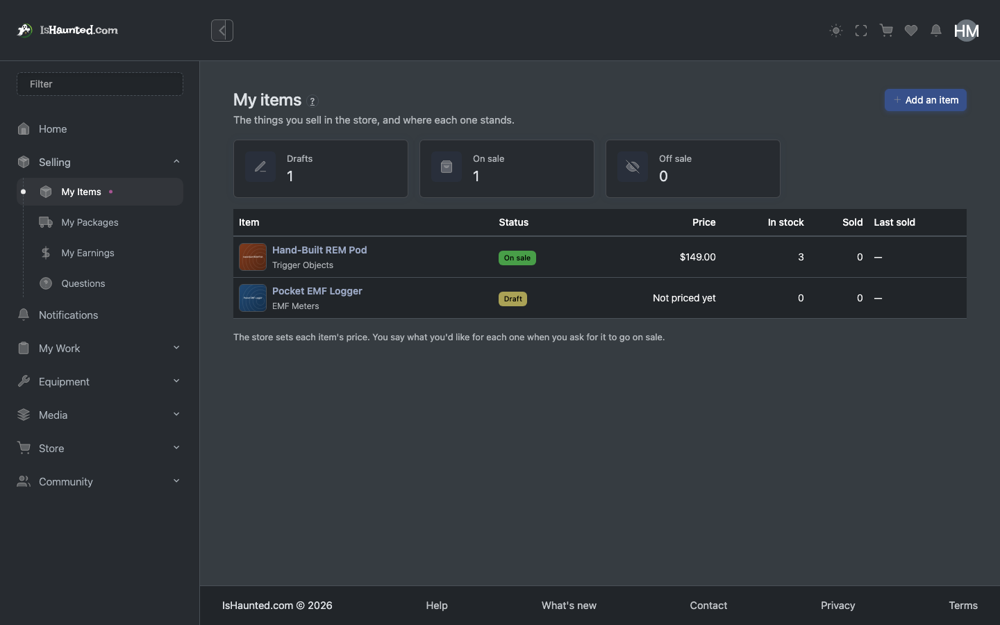
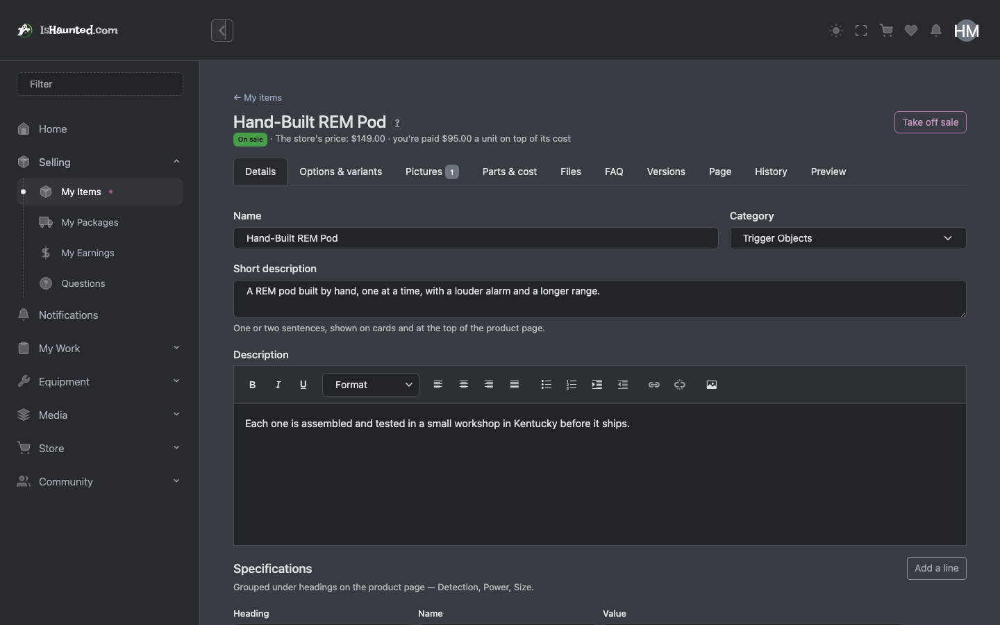
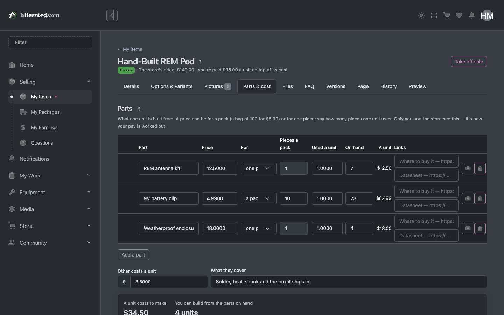
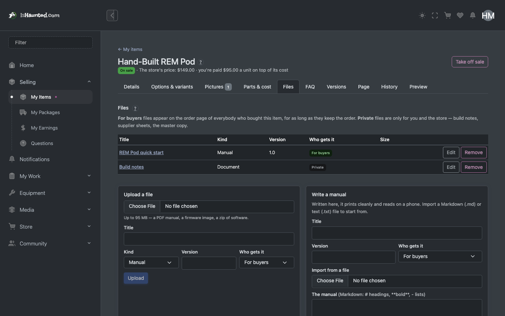
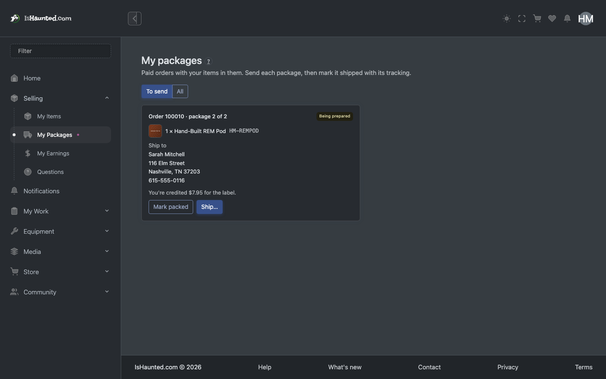
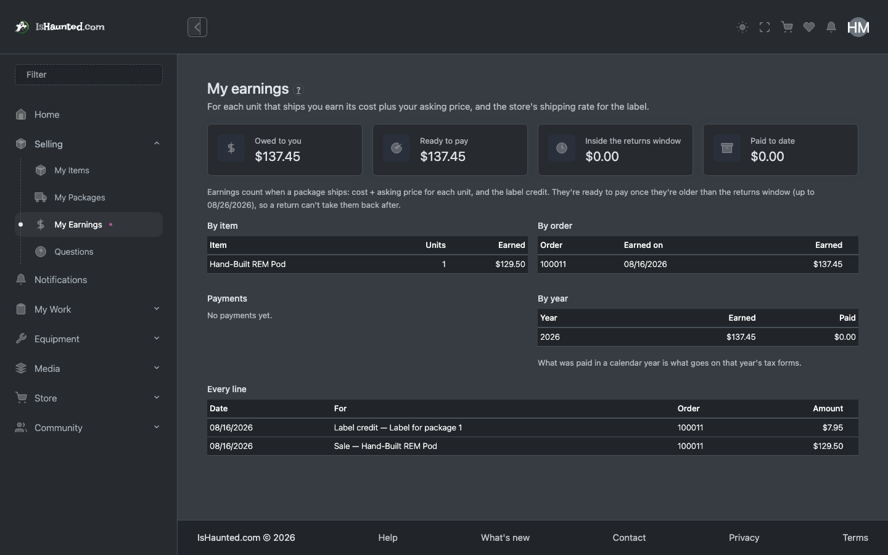
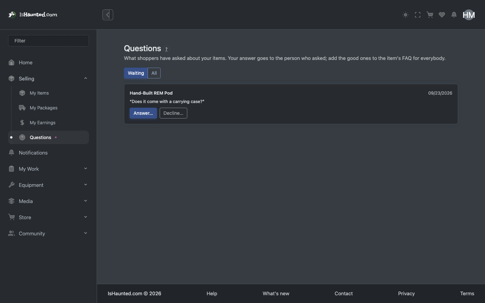

A member who makes equipment and sells it through the store. Written for a developer joining the project.
Every screenshot shows simulated, seeded data, captured in dark mode while signed in as this user type. Nothing here is a real person, case or investigation. Where a page shows a refusal, that is the designed behaviour for this seat.
The seller is an ordinary member everywhere else; Seller is an additive site role, given on the person's Site Roles tab. It opens a Selling workspace — in the menu once the store is switched on — for their own items and nobody else's. Every seller endpoint starts from the caller's own items, and another seller's item answers 404 rather than 403.
The split of powers is the design: a seller writes their words, pictures, options, stock, parts list, files, FAQ and versions, and asks for an item to go on sale; the store sets every price and approves. Each seller ships their own package with their own tracking, and is paid cost plus their approved asking price per unit, by hand, against an append-only earnings ledger.
Two things gate every surface, and they are different questions:
Your seat in a group — owner, administrator, member, viewer — answers "may this person do this?". The group's plan answers "does this group pay for this at all?". A member of a group whose plan excludes an area is refused for a completely different reason than a viewer who is not allowed to write, and the site says which.
A refusal is never rendered as "nothing here." An empty list and a server
saying no are different facts, and a page that shows the same grey nothing for both teaches people
to distrust it. Every list goes through LoadResult, which carries loading, empty,
refused, session-ended and rate-limited as distinct states — and every one of them has its own
words on screen.
This matters when reading this document: where a screenshot shows a refusal, that is the designed behaviour for this seat, not a broken page.
My items. Their items and where each stands: draft, on sale, off sale. The price is shown, never editable.

An item. One item's editor. Every change lands in the item's history, marked as theirs.

Parts and cost. The parts list: what a unit costs to make. Never shown to shoppers.

Files. Manuals and firmware, each for buyers (downloadable from a paid order) or private.

My packages. Paid orders with their items in: the address, and Ship with carrier and tracking.

My earnings. Owed, ready to pay, paid — by item, order and year, for tax forms.

Questions. Shoppers' questions, with nobody's name on them. Answer, decline, or add to the FAQ.

Refused store admin. The store's own administration refuses a seller.